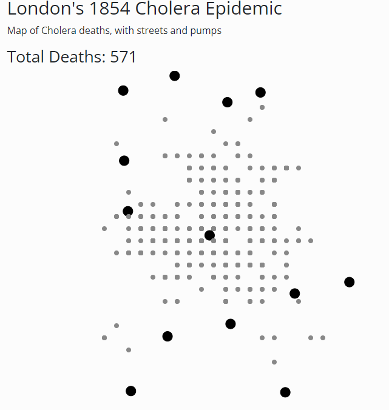

My design philosophy early on was to develop a working prototype that could at a bare minimum display the deaths and streets. I knew I wanted to make a dashboard style visualization, but did not draw any sketches, because the points intial appearance on the screen would provide insight for my design process.
The recreation Dr. John Snow's map was the centerpiece of this visualization, so I decided it should take up more screen space than any other single plot. The more difficult decision was allocating the rest of the screen space. I decided to iterate with different layouts until I found something that felt natural while minimizing whitespace and clutter.
Based on results from the usability testing, I moved forward with a much more targed design process. Although I had just one subject, having a set of fresh eyes on the visualization really helped see how the average user might want to interact with my visualization.
It was immediately clear that vanilla HTML with no CSS was unpleasant to look at. To give the interface a sleeker, more professional feel, I used one of the free Bootstrap based themes available at Bootswatch. In particular, I chose the Simplex theme, which has minimalist greyscale features that don't clash with the plots. Using this template does not add functionality to the visualization itself, but made it easy to add a header, column spacing, and professional-looking buttons.
I wanted to go with a dashboard type layout. My first thought was to include death by date underneath the main plot, but based on feedback from the usability testing this was confusing. So the final design uses two main "panels". The "left" panel has the map which takes up the most visual space since it is the centerpiece of the visualization. The other panel contains all death plots by day, age, and gender. The death plots are further broken down into two sub-panels. The top panel groups the demographic variables of age and gender while the bottom panel contains death by date.
The map displays streets as lines, deaths as small colored circles, pumps as large black circles, and has optional text labels for the streets. Each component can be optionally toggled with buttons underneath the plot. Lines the only reasonable mark for streets. I chose to keep these thin and black, so they were clear but not overemphasized. One issue I had with John Snow's original map was that pumps did not clearly stand out, so I used large circle to emphasize these. Deaths are plotted as smaller circles with a default grey that is perceptually equidistant from black and white so deaths aren't confused with the pumps or negative spaces between the streets. Street labels are toggled off by default because I found them distracting and not probably not very helpful unless you want to discuss a specific area on the map. Grid clustering is turned off by default so the user has a clearer picture of the spatial relationship of deaths to begin with. There are also tooltips so the user can hover over a single plot to see all the information about a death.
For the gender plot, I used the two endpoints of a 3-class red-blue colorblind safe diverging color palette from ColorBrewer. I assigned blue to male and red to female since I've seen this in lot of visualizations do this so users will probably expect it. For gender, I went with a 6-class qualitative color palette from ColorBrewer, making sure to not overlap with any of the colors used for gender. I chose a qualitiative color palette because even though the age classes are sequential, age may not have an epidemiologically meaningul "weight". Barplots were used for both since they plots show a quantitative value (death count) by a qualitative value. Black marks were used for the death by date plot since the data channels were already portrayed well by the x and y axis. Since death by date is time series data, death counts could be marked by either a bar chart or a line chart. Interpolating using the lines on a line chart would be meaningless here, so I opted for a bar chart.
John Snow's original visualization did not emphasize demographic data. With this visualization, it was posible to interactively investigate demographic trends. Coloring deaths by gender and looking at different time windows didn't reveal any particular interesting trends regarding gender. The number of male and female deaths was for the most part equal during any given time range.
In terms of age, the bar plot for any given time range showed that the "0-10" and "> 80" categories experienced the most deaths. A lack of spatial correlation for ages and gender is expected given the synthetic nature of the demograhics data.
Looking at the map, there didn't seem to be clear spatial patterns among male vs female deaths or the different age ranges. However, including the various toggles really helped to investigate spatial trends. My preferred setting was to set death color to a flat grey, and hide labels and streets. This essentially hid what we now know to be noisy variables and allowed me to focus clearly on the distribution of deaths around pumps. Using the grid cluser functionality made the map even more digestible. This produced the final visualization that is shown below. This plot supports John Snow's original hypothesis that the Broad Street pump was causing the Cholera outbreak, but does so in a much more direct way:
